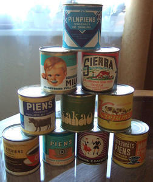
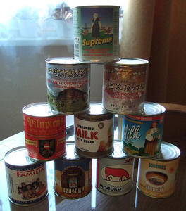
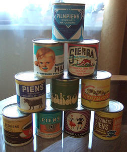
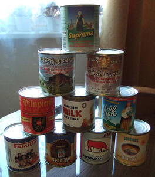

Joprojām liela daļa pārtikas produktu tiek iepakoti papīra un kartona iepakojuma materiālos.
Metāla iepakojums tiek ražots no skārda, alumīnija vai tērauda. Tomēr rodas jaunas iepakojuma tehnoloģijas un materiālu pielietojums.
1952. gadā konceptu izstrādā zviedru zinātnieks Tetra Pak uzņēmuma dibinātājs Rubens Rausings (Dr.Ruben Rausing 1895.- 1983.).
Tieši viņš izgudroja jauna veida pārtikas produktu, kartona iepakojumu telpiskas, regulāras trijstūra piramīdas formā, kura tika iesaukta par tetrapaku. Tiek radīta jauna pārtikas produktu iepakojuma tehnoloģija. Tetrapakas sastāvā tiek lietots papīrs, alumīnijs, polietilēns. Iepakojuma tehnoloģija ļauj drošāk un ērtāk uzglabāt produktus. Pirmais produkts, kurš tika iepildīts jaunajā iepakojumā bija piens, jo tā realizācijas laiks iepriekš bija ļoti ierobežots. Ideja bija vienkārša un efektīga.
- Tetra Classic iepakojums
- Rubens Rausings (Dr.Ruben Rausing).Tetra Pak uzņēmuma dibinātājs
Laika gaitā ražošanas tehnoloģija tika attīstīta un pilnveidota. 1961. gadā Tetra Pak sāk ražot iepakojumu pēc aseptiskās tehnoloģijas, kas nodrošina iespēju ilglaicīgi glabāt produktu istabas temperatūrā, tas iespējams, izmantojot kartonu, alumīnija foliju un polietilēnu savienojumā ar īpašu produktu apstrādes tehnoloģiju, kas iznīcina produkta bojāšanos veicinošos mikroorganismus. Šis iepakojums tiek lietots ne tikai piena un piena produktu iepakošanai, bet arī dažādu sulu ērtai, drošai uzglabāšanai un transportēšanai. Tam ir radīta jauna taisnstūrveida forma.

{kind=link}
{kind=link}
- Tetra Brik Aseptic – pēc aseptiskās tehnoloģijas ražots iepakojums
Tetrapaka un tās izgudrotājs iekļauts 30 pasaules stila ikonu vidū.
952. gadā tirgū parādījās šobrīd ļoti plaši izplatītās alumīnija dzērienu bundžiņas. Tajās pildīja galvenokārt gāzētus dzērienus. Bundžu dizaina radīšanas pirmsākumos tām pietrūka ērts atvēršanas mehānisms. Lai atvērtu bundžu, bija nepieciešams izmantot nazi vai kādu citu palīginstrumentu.
Amerikānis Ermals Freizs (Ermal Fraze 1913.-1989.) izgudroja alumīnija bundžiņu atvēršanas mehānismu ”pull tab”. Ideja radās pēc tam, kad Freizs kādu dienu aizejot piknikā, nebija paņēmis līdzi bundžiņas attaisāmo, kā rezultātā bundža tika atvērta pret mašīnas bamperi. Freizs nolēma, ka jāizgudro attaisāmais, kas būtu jau piestiprināts pie bundžas.
{kind=link}
- Alumīnija bundžiņu ”pull tab” atvēršanas mehānisms
1957. gadā tika atklāts Rēzeknes piena konservu kombināts (RPKK), kurš ir pirmais piena konservu kombināts Latvijā. RPKK ražoja dažāda veida produktus, kā: iebiezināto pienu, pilnpiena produkciju, saldējumu, sviestu, sieru, konfektes Gotiņa, kazeīnu, kaltētus dārzeņus. Lielākā daļa piena konservu tika ražota eksportam un armijas rezervēm. Piena konservi tika iepakoti pārtikas skārda bundžās, kuras marķēja ar papīra etiķetēm.
RPKK piena konservi savā laikā bija kā Rēzeknes vizītkarte, tie bija populāri gan Latvijā, gan ārzemēs. Tāpēc bieži vien ārzemju viesi kā suvenīru no Latvijas izvēlējās arī Rēzeknes iebiezināto pienu. Pircējus piesaistīja ne tikai izcila produkta kvalitāte, bet arī labs un krāšņs iepakojuma dizains. Vēl šobrīd daudzi cilvēki, arī ārzemnieki, atceras gardo Rēzeknes produkciju un uzskata, ka tā bija pati labākā. RPKK piena konservi pat pēc 20 un vairāk gadu ilgas glabāšanas pareizos apstākļos ir lietojami uzturā.
 RPKK ražotais iebiezinātais piens metāla kārbā ar papīra etiķeti

RPKK ražotie piena konservi Latvijas patērētājam

Piena konservi eksportam
RPKK ražotais iebiezinātais piens metāla kārbā ar papīra etiķeti

RPKK ražotie piena konservi Latvijas patērētājam

Piena konservi eksportam
{kind=link}
{kind=link}
- RPKK ražotais iebiezinātais piens metāla kārbā ar papīra etiķeti
- RPKK ražotie piena konservi Latvijas patērētājam
- Piena konservi eksportam
1957. gadā amerikānis Viljams F. Darts (William F. Dart) Dart Container Corporation, eksperimentējot ar polistirola vielu, izstrādāja komerciālai ražošanai vienreizlietojamo putuplasta krūzīti. Materiāls ilgāk saglabā gan karstu, gan aukstu dzērienu.
1965. gadā Dart uzņēmums sāk ražot krūzīšu vāciņus. 20.gs. 70. gados tiek ražotas arī bļodiņas, vienreizlietojamās dakšiņas, karotes un naži no plastmasas, arī caurspīdīgas glāzes.
Pasaules attīstītākajām valstīm Dart uzņēmums saražo 70 procentus vienreizlietojamo iepakojumu.
{kind=link}
{kind=link}
- DART vienreizlietojamais pārtikas iepakojums
www.dartcontainer.com
www.bonappetit.com/entertaining-style/trends-news/article/disposable-coffee-cup-history
20. gs. 70. gadu sākumā iepakojumu ražošanā arvien straujāk ienāk plastmasa un tās dažādie veidi. Populārākie pārstrādājamie plastmasas iepakojumi ir polietilēns (LDPE) un termina „polietilēnteraftalāts” saīsinajums (PET).
PET (piesātinātie poliesteri) ir caurspīdīgs polimērs ar augstu mehānisko izturību, kas saglabājas plašā temperatūru diapazonā, ar mazu gāzu un mitruma caurlaidību. Savu ķīmisko un mehānisko īpašību dēļ PET visvairāk izmanto minerālūdeņu, gāzēto atspirdzinošo dzērienu un eļļas pudeļu ražošanai.
Latvijā savāktās PET pudeles pārstrādā rūpnīcā PET Baltija Jelgavā – tur top PET pārslas, no kurām gatavo jaunu pārtikas iepakojumu, vienreizlietojamos galda traukus un piederumus. No PET pudelēm gatavo arī tekstilšķiedru. No tās ražo apģērbu, segas, paklājus. No 27 pudelēm iegūst tik daudz šķiedras, cik nepieciešams viena džempera radīšanai.
Viena 0,5 l tilpuma PET pudele sver 50 gramus; 20 000 pudeļu = 1 tonnu.
Plastmasas iepakojuma priekšrocības ir to formu un krāsu daudzveidība, savienojamība ar citiem materiāliem un tās mazais svars. Lielākā daļa plastmasu dabiskajā vidē nesadalās un nepārveidojas. Tās piesārņo dabu, noslogo to. Tiek uzskatīts, ka minimālais laiks, kas nepieciešams, lai plastmasas pudele sadalītos dabā, ir 80 gadi. Dažkārt otrreizējā pārstrāde nav ekonomiska, tomēr lielākajā daļā civilizētās pasaules to dara.
1973. gadā amerikāņu ķīmiķis Nataniels Vaiets (Nathaniel Wyeth 1911.-1990.) patentē PET plastmasas pudeli. 1977. gadā tā pirmo reizi otrreiz pārstrādāta.
{kind=link}
{kind=link}
- PET pudeles
- PET pudeles otrreizējās pārstrādes procesā
20. gs. 80. gadu sākumā arvien vairāk pārtikas produktu tiek iepakoti dažādos polietilēna izstrādājumos. Pārtikas uzglabāšanā un transportēšanā arvien vairāk tiek izmantoti polietilēna maisiņi. Plastmasa ir visapkārt.
Sabiedrībā sāk izskanēt dažādi lozungi par plastmasas nelabvēlīgo ietekmi uz cilvēka veselību. Piemēram: „Plastmasas iepakojums pasargā un indē produktu!”, vai arī „Jūs zināt, kas ir zem iepakojuma, bet vai jūs zināt, kas ir iepakojumā!” Tādēļ pastiprināti tiek pievērsta uzmanība iepakojuma materiāla sastāvam, lai tas būtu veselībai nekaitīgāks.
{kind=link}
{kind=link}
{kind=link}
- Polietilēna maisiņu iepakojums
- Plastmasas kārbu iepakojums
- Pārtikas produktu dažādi plastmasas iepakojuma veidi